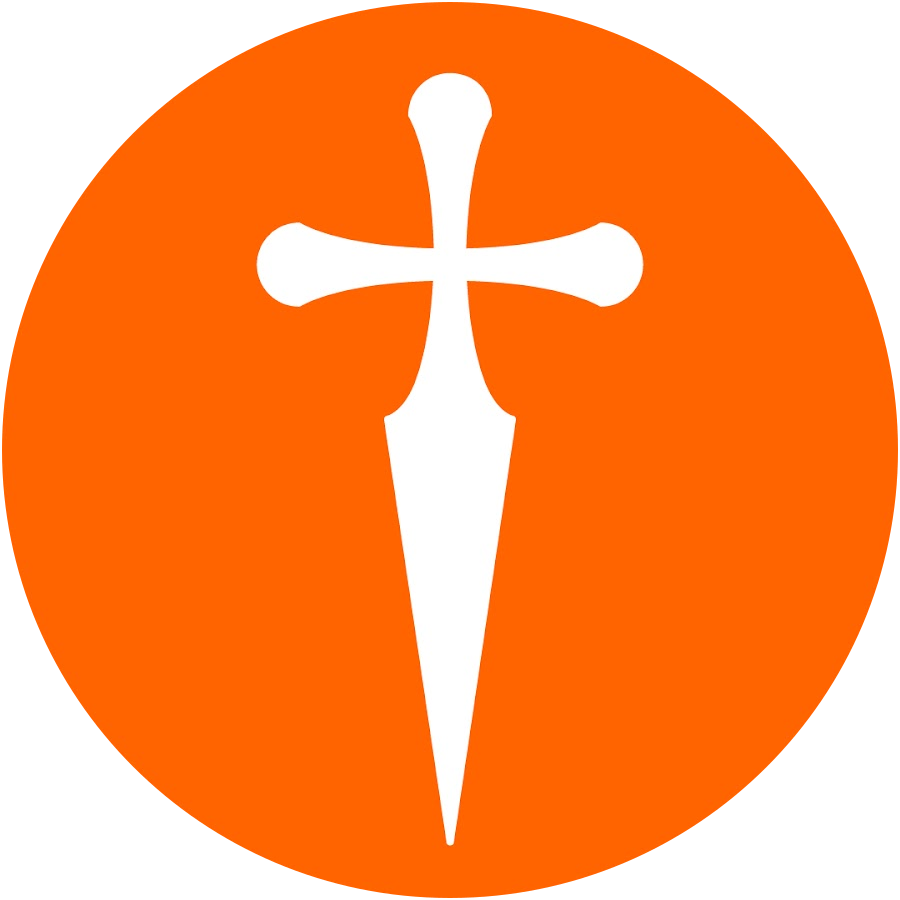
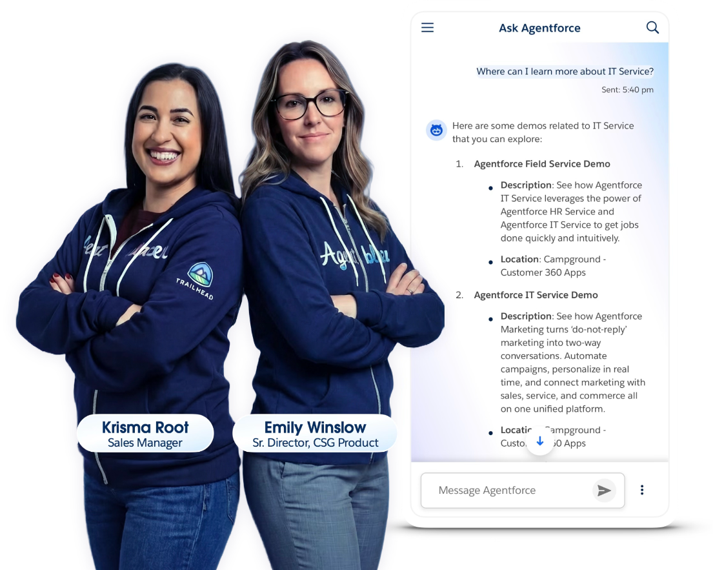
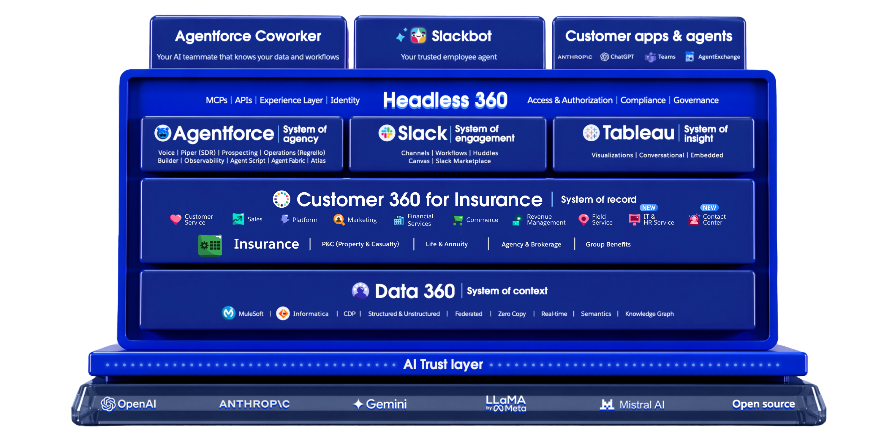

Banco Galicia + Salesforce
Del operar y reaccionar al asesorar y anticipar: una estrategia para liberar al ejecutivo y potenciar el crecimiento de cada relación.
Gracias
Forward-Looking Statements
Esta presentación contiene declaraciones prospectivas ("forward-looking statements") sobre el desempeño futuro esperado de Salesforce, incluyendo, entre otras, declaraciones sobre nuestras expectativas financieras, estrategia de producto y hoja de ruta. Los riesgos e incertidumbres podrían hacer que los resultados difieran materialmente de los expresados en estas declaraciones.
Las declaraciones prospectivas están sujetas a riesgos, incertidumbres y suposiciones. Los clientes que compren productos de Salesforce deben tomar decisiones de compra basándose en las funcionalidades actualmente disponibles. Cualquier servicio, funcionalidad o característica no lanzada que se mencione aquí no está disponible actualmente y podría no entregarse a tiempo, o no entregarse en absoluto.
Los datos financieros, nombres de clientes (Tienda de Café S.R.L., Raquel) y demográficos utilizados en esta presentación son ilustrativos, corresponden a un caso de negocio de demostración y no representan a una entidad ni a personas reales.
Caída de CSAT & NPS
Descenso crítico en la satisfacción de los clientes.
Desbalance de tiempo
El objetivo es 50% comercial, pero hoy el 80% se consume en tareas operativas — apenas un 8% de tiempo comercial efectivo en sucursal.
Contactabilidad fragmentada
Flujos entrantes (inbound) y salientes (outbound) desconectados que confunden al cliente.
Rigidez tecnológica
Un bot reglado con entendimiento muy limitado del lenguaje natural: "no entiende" si no se le habla con las palabras exactas.
Multisistema y pantallas
El ejecutivo salta entre múltiples pantallas y sistemas para atender una sola gestión.
Falta de trazabilidad
Pérdida de historial y contexto de las conversaciones directamente en la vista del cliente.
Una clienta de alto valor —
que espera atención personalizada, en el momento justo.
Es una clienta Eminent de alto valor: espera un trato personalizado y proactivo, a la altura de su relación con el banco.
Valora sobre todo el momento justo: que la reconozcan en cualquier canal y que la respuesta llegue cuando la necesita, no días después.
Además es CEO de Café del Plata, cuenta PyME del banco: una mala atención tiene doble impacto — golpea la relación personal y la comercial.
Experiencia por necesidad de negocio
Una clara división del flujo de atención según corresponda al Contact Center o al Ejecutivo de Cuentas.
Agente inteligente de IA
Un asistente capaz de entablar conversaciones naturales, con menor rigidez y mayor entendimiento del lenguaje.
IA en los flujos de trabajo
Automatización de tareas rutinarias (contracargos, renovación de PIN) para pulverizar ese 80% de carga administrativa.
Consola de trabajo única (Vista 360)
Una sola pantalla integrada para gestionar interacciones y procesos de negocio sin cambiar de sistema.
Trazabilidad y contexto total
Historial y contexto de todas las conversaciones en la Vista del Cliente y en cada una de las gestiones de negocio.
Gestión comercial proactiva
Con lo operativo automatizado, el ejecutivo enfoca su tiempo en las actividades de mayor valor: asesorar, anticiparse y hacer crecer cada relación.

Engagement
Dónde conversan clientes, ejecutivos y equipos.
Agency
Los agentes de IA que ejecutan y accionan.
Work
Las apps y procesos que corren el negocio.
Insight
La analítica que revela qué hacer a continuación.
Context
Los datos unificados que dan sentido a todo.

Ejecutivo potenciado,
cliente contento
Data Cloud unifica. Financial Services Cloud estructura.
Agentforce actúa.
Una plataforma agéntica que le devuelve al ejecutivo el tiempo para lo que importa —
y al cliente, la atención que espera.